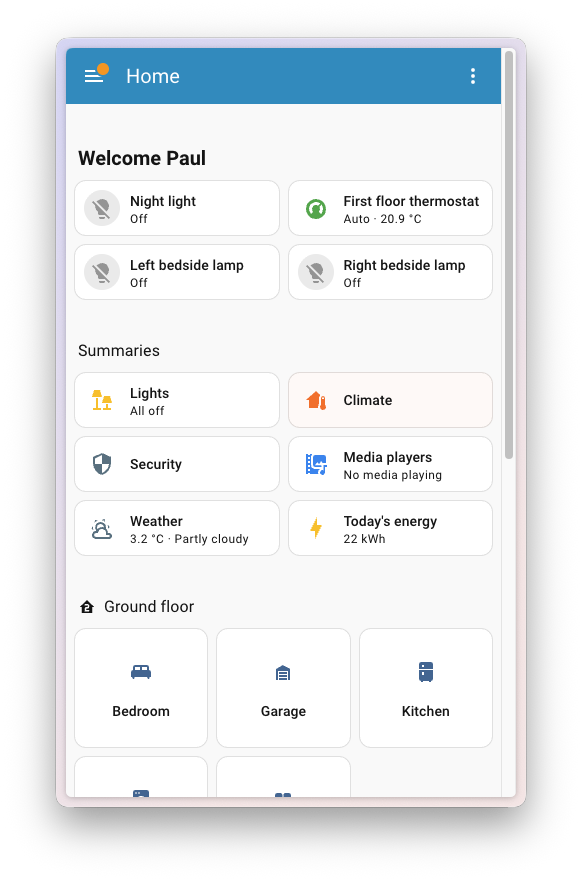
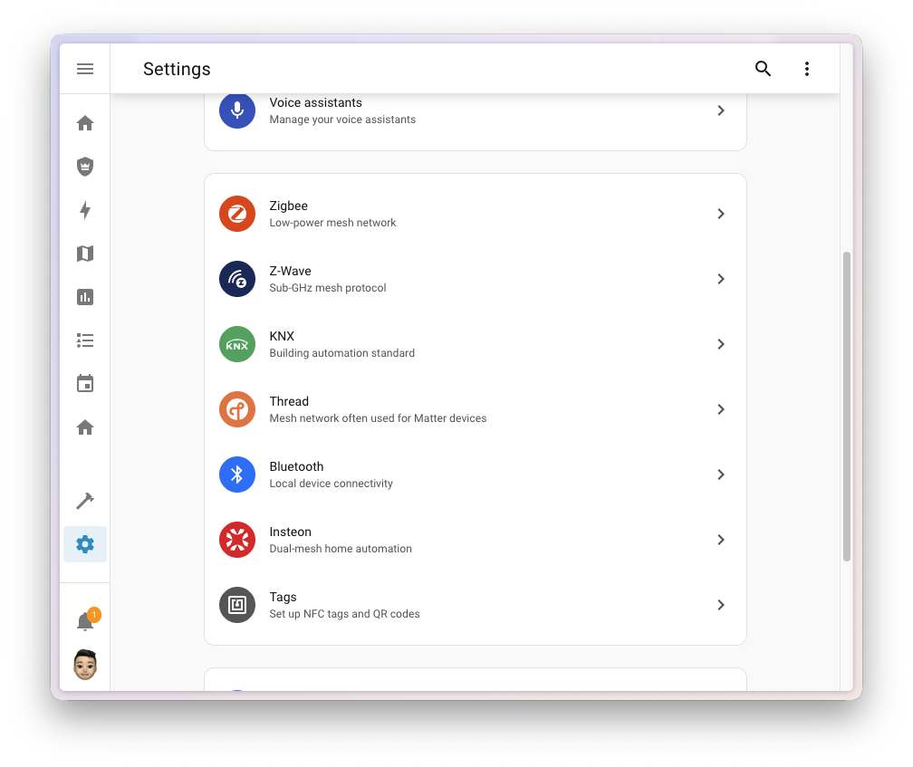
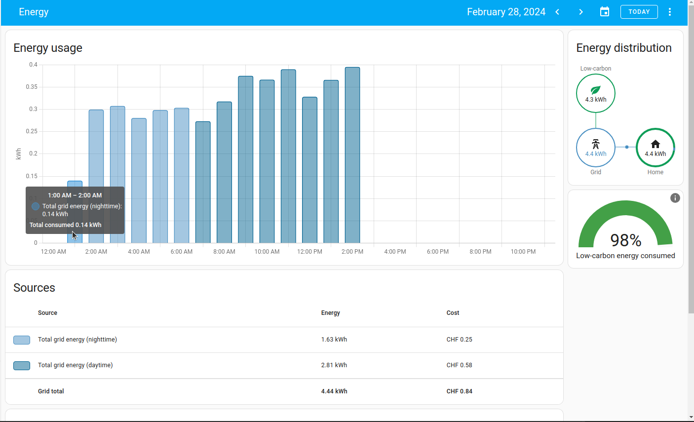

Home Assistant — локальный UI интегратора. Алиса — голос жителя. Оба читают тот же API, что уже отдаёт Telegram-агент.
Скриншоты Home Assistant: официальный блог 2026.1 и документация dashboards. Потенциальная интеграция, не партнёрство. Бейдж «Works with Alice» не используем — нужна сертификация Яндекса.


